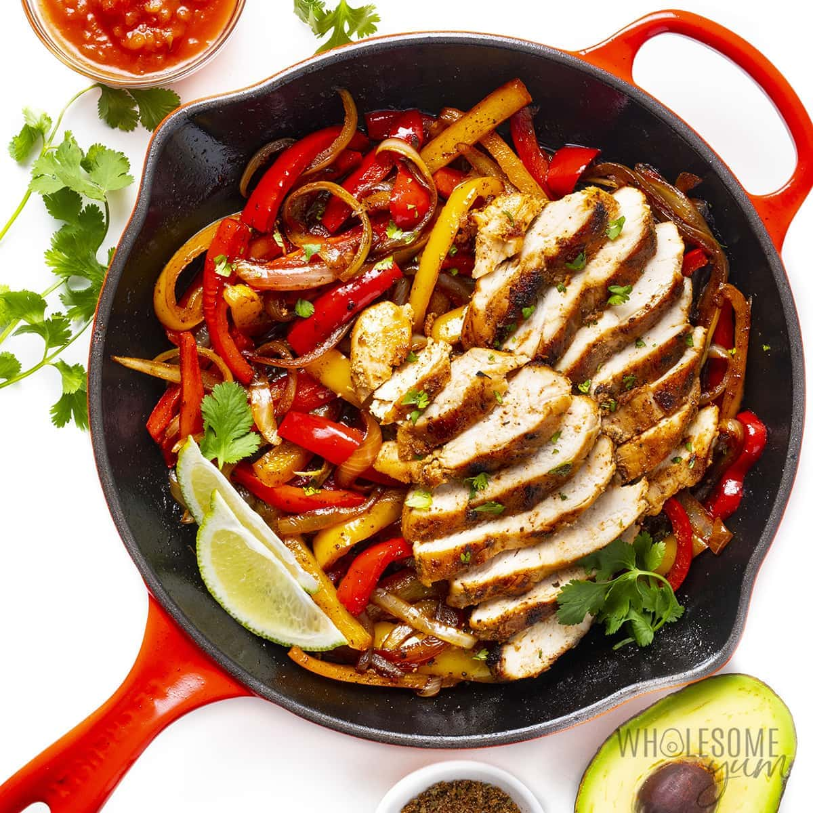

Chicken Fajitas

Description
Fajitas are a Tex-Mex dish that consists of little strips of meat, typically cooked with peppers and onions.
Ingredients
- 1 lb chicken breasts
- 2 tbsp fajita seasoning mix
- 2 tbsp olive oil
- 2 large bell peppers (sliced into thin strips)
- 1 medium onion
- 1/2 tsp sea salt
- 1/4 tsp black pepper
- lime wedges (optional)
Steps
- Season chicken breasts on both sides with fajita seasoning and use your hands to rub it in.
- Heat 2 tablespoons (29 ml) of oil in a large cast iron skillet over medium-high heat, until shimmering. Add the chicken breasts and saute for 5-7 minutes per side, until golden brown and cooked through (I recommend a meat thermometer to check that it reaches 165 degrees F (74 degrees C)). Remove chicken to a plate and cover with foil to keep warm.
- Add the bell peppers and onions to the pan. (There should be enough oil in the pan as is, but can add more if needed.) Saute for 4-5 minutes, stirring occasionally but not constantly, until soft and browned. Season with salt and pepper.
- When the peppers and onions are almost done, slice the chicken breasts against the grain. Once the vegetables are done, add the chicken to the skillet, and if desired, squeeze lime juice over the fajitas.